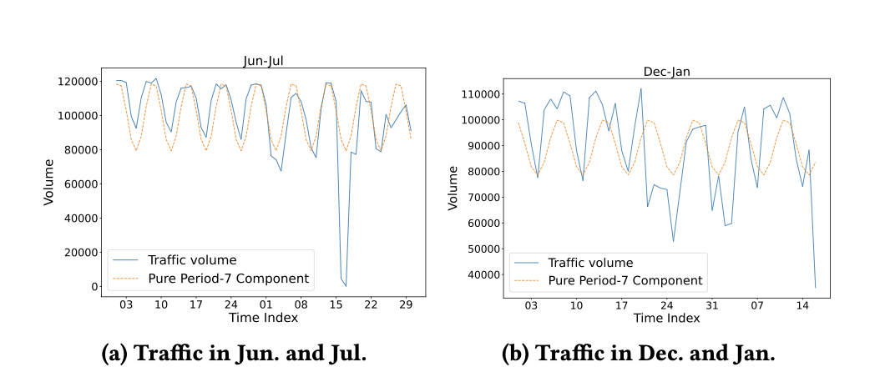
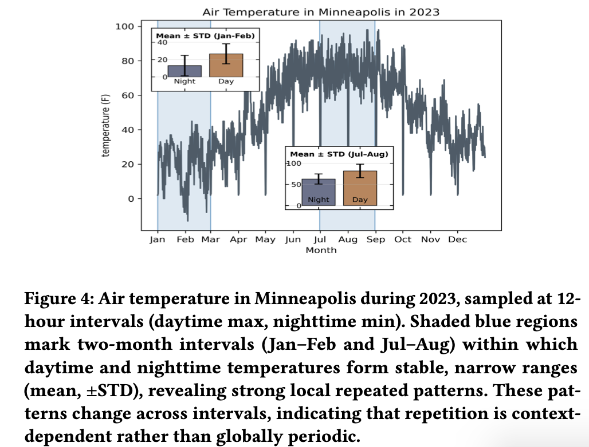

Introduction.
We are introducing a method to directly estimate Mutual Information between Time Series and Temporal Event Sequence (MISS). MISS provides an accurate score for the interaction between two different kinds of temporal data. This score can help with causality analysis, seasonality analysis, repeated pattern analysis, covariate selection and feature selection. It plays a role similar to Pearson correlation for two time series, or pointwise mutual information for two temporal event sequences.
Although such a score would be useful, existing approaches usually run into one of two gaps:
Neural estimators need many matched time series and event sequence pairs, but these pairs are expensive to label by hand and rarely exist as ready to use data.
Non-neural approaches often rely on ad hoc data transformations, and existing MI estimators can be sensitive to rounded values, repeated measurements or redundant event states.
This leads to a basic question: can we trust the estimated interaction score?
This measurement gap also extends to several downstream tasks, where existing work solves part of the problem but limits downstream analysis in important cases:
TDMI can measure lagged dependence, but existing methods are not built to directly measure cross-modal causality strength between a time series and an event sequence.
Classical methods can detect periods, but noisy or disrupted data can confuse the result. Even when they find a weekly cycle, they may not tell whether the seasonality is strong, weak or partially broken.
Most tools focus on global seasonality, where a pattern repeats at a fixed interval. They do not directly measure local patterns that appear only under specific temporal contexts.
Common tools work like Pearson correlation: they select other continuous time series related to the target. There is no native way to select discrete temporal covariates.
These tasks may look different, but they share the same missing piece: a direct score for how much a temporal event sequence explains a time series.
MISS addresses these gaps from three sides:
It provides a theoretical estimation foundation for mutual information between discrete and continuous variables, without forcing one side to become the other.
It models a recorded time series as both continuous variation and repeated value mass caused by finite measurement precision.
It groups similar event states together, so repeated or overlapping event information does not overweight the final score.
In short, MISS tries to make the estimate reliable from the math, the time series representation and the redundancy in real data.
Background and related work.
Dependence measures are already central to temporal data analysis. Pearson correlation and its variants give a direct score between two time series. Pointwise mutual information plays a similar role for pairs of discrete events or symbols.1 These tools are useful because they are simple: before building a larger model, they tell us whether two objects are related.
The setting in this paper is harder because the two objects have different forms. One side is a continuous time series, while the other side is a discrete temporal event sequence. Traffic volume is continuous, while holidays and road closures are events. Sales are numeric, while promotions and stockouts are categorical events. Health signals are continuous, while medication, sleep and travel are logged as event states.
A natural first attempt is to make the two sides look alike. We could discretize the time series into symbols through binning,2 or turn event labels into numbers and then apply a familiar continuous estimator.3 But this preprocessing can quietly change the answer: bin choices can create or hide dependence, numeric IDs can impose fake order on categories, and one versus rest encodings can split one event sequence into many separate tests. This is the first gap from the introduction: non neural approaches often rely on data transformations, so the final score can become sensitive to those choices.
Other related tools answer narrower questions. Event time series correlation and hypothesis testing ask whether values move around particular events,4 not how much the full event state sequence reduces uncertainty about the signal. Classical nonparametric MI estimators work well for continuous variables,5 and discrete continuous estimators can compare numeric values with categorical labels.3 But temporal data adds practical artifacts: rounded or repeated measurements, plus redundant or highly correlated event states. If these are ignored, the estimated dependence can become unstable or biased.
One could also learn a neural estimator. Neural MI estimation trains a model to approximate dependence,6 similar in spirit to how CLIP learns an aligned representation between images and text.7 But this creates the second gap from the introduction: it needs many aligned time series and event sequence pairs, and such data is expensive to label and rarely available. Even if enough data exists, the learned score can inherit dataset bias, model bias and black box behavior, making it hard to explain why one event sequence is ranked above another.
These measurement issues also limit downstream analysis. In causality analysis, time delayed mutual information (TDMI) is useful,8 but existing TDMI methods usually assume both inputs are continuous time series rather than one time series and one event sequence. In seasonality analysis, autocorrelation, seasonal decomposition and Fourier based methods have been used for decades,9, 10, 11 but they mostly ask whether a fixed period exists. Noise, missing values, holidays and other irregular disruptions can distort the result; detrending or decomposition may still detect a weekly period, but it can hide how much that pattern is weakened. A useful score should distinguish clean seasonality from noisy or partially broken seasonality. For temporal repeated patterns, existing tools mainly capture global seasonality, where a pattern repeats at a fixed interval. They do not directly quantify local or event conditional patterns, such as a repeated structure that appears only under a specific temporal context. For covariate selection, common tools work like Pearson correlation: they select other continuous time series related to the target. They do not natively select discrete temporal covariates for a continuous target series.
MISS targets this broader measurement gap. It treats the time series and the event sequence in their native forms, then estimates how much the event states reduce uncertainty about the continuous signal. The result is a Pearson correlation like score for heterogeneous temporal data: simple enough to rank event sequences, but general enough to support lag discovery, seasonality analysis, covariate selection and temporal evidence retrieval.
1. Church and Hanks, Word Association Norms, Mutual Information, and Lexicography, 1990.
2. Liu et al., Discretization: An Enabling Technique, 2002.
3. Ross, Mutual Information between Discrete and Continuous Data Sets, 2014.
4. Luo et al., Correlating Events with Time Series for Incident Diagnosis, KDD 2014.
5. Kraskov et al., Estimating Mutual Information, 2004.
6. Belghazi et al., Mutual Information Neural Estimation, 2018.
7. Radford et al., Learning Transferable Visual Models From Natural Language Supervision, 2021.
8. Fraser and Swinney, Independent Coordinates for Strange Attractors from Mutual Information, 1986.
9. Box et al., Time Series Analysis: Forecasting and Control, 2015.
10. Cleveland et al., STL: A Seasonal-Trend Decomposition, 1990.
11. Brillinger, Time Series: Data Analysis and Theory, 2001.
12. Guyon and Elisseeff, An Introduction to Variable and Feature Selection, 2003.
13. Belmonte et al., Hierarchical Shrinkage in Time-Varying Parameter Models, 2014.
14. Dougherty et al., Supervised and Unsupervised Discretization of Continuous Features, 1995.
Approach.
MISS starts by turning the temporal question into a dependence question. For each aligned pair, X is the event state, such as weekday, holiday, promotion or medication status, and Y is the corresponding signal value, such as traffic volume, sales, temperature or heart rate. In simple terms, we ask: how much does knowing the event state reduce uncertainty about the signal value?
The core object is the paper's mutual information formulation for one discrete variable and one continuous variable. The estimator computes this quantity through entropy terms: the event probabilities come from empirical frequencies, while the signal distribution is estimated nonparametrically. Instead of predicting the next signal value, MISS measures dependence directly, which keeps it closer to a measurement operator than to a trained classifier, embedding model or forecasting model.
I(X, Y) = Σx∈X ∫y∈Y p(x,y) log( p(x,y) / (p(x)p(y)) ) dy
MI is high when knowing X makes Y less uncertain.
Two modeling details make this practical for real temporal data. First, a recorded time series is not always a clean continuous curve. Take temperature as an example: the real temperature changes continuously, but a sensor may only report one decimal place, so many timestamps can share the exact same value, such as 20.1, 20.1 and 20.2. Classical nearest-neighbor entropy estimators are designed for continuous samples, where exact duplicates should almost never happen. When duplicates appear, the nearest-neighbor distance can become zero, and the estimate becomes unstable. MISS handles this with continuous-discrete duality: values that appear once are estimated as continuous samples, while repeated values are treated as repeated recorded states. This keeps the numeric meaning of the signal without pretending that duplicated readings are ordinary continuous samples.
Second, event sequences often contain labels that are different symbols but lead to similar signal behavior. For example, two promotion types in a sales dataset, or two calendar states in a traffic dataset, may produce similar distributions of aligned signal values. Treating every raw event label as fully separate can fragment the data and make the estimate unstable. MISS optionally collects the aligned signal values for each event type, compares those empirical conditional distributions, and uses hierarchical clustering to replace redundant labels with latent event groups before estimating MI.
As a result, the estimator keeps the two modalities close to their native forms: the signal remains numeric, the event sequence remains categorical, and the final output is a normalized MI score for ranking event sequences, discovering lags and selecting covariates.
What makes the estimator robust:
Unique values use continuous entropy; repeated values become discrete mass.
Event labels with similar signal distributions can share one latent label.
Pseudocode
Downstream tasks.
The experiments ask whether one score can work as a practical dependence operator whenever a continuous signal must be compared with discrete temporal context.
We start from seasonality because it is the classic version of this problem. Traditional methods are good at finding a period, but they usually treat seasonality as a global signal pattern and can be hard to interpret when noise, missing values or holidays weaken the cycle. MISS improves this by turning seasonality into a dependence score between the time series and calendar context: it can still identify the period, but it also says how strong the seasonal effect is. From there, the same idea leads to a more general temporal repeated pattern task, where repetition can depend on local context rather than a single global cycle.
The remaining tasks test the same idea in other settings: cross-modal TDMI measures delayed dependence between events and signals, covariate selection ranks discrete forecasting covariates for a continuous target, and feature selection shows that the estimator can also work outside temporal data when the input is simply continuous values paired with discrete labels.
Seasonality with strength
Classical tools such as ACF, seasonal decomposition and Fourier analysis are good at searching for a fixed period. But they mostly answer a yes or no style question: is there a dominant period? Real traffic is messier. Holidays, missing values and irregular disruptions can blur the pattern, while decomposition can still report a strong weekly cycle even when the observed signal is clearly partly broken.
MISS treats seasonality as dependence between traffic volume and calendar context. This keeps the familiar weekly seasonality task, but adds a more useful score: it detects the 7 day pattern and also reflects how strongly that pattern appears. In the paper, June-July receives a higher MI score than December-January, matching the visual fact that winter traffic is more disrupted by holidays.
Dataset
Minneapolis daily traffic volume. The event sequence is day-of-week labels. June-July has clearer weekly seasonality; December-January is disrupted by holidays.
Baselines
ACF, seasonal decomposition plus ACF and Fourier transform. These methods mainly detect a candidate period.
Result
MISS finds the same 7-day pattern in both periods, but the score drops from 0.6501 to 0.5664 when the pattern becomes weaker.

| Data | Method | Measure | Seasonality |
|---|---|---|---|
| Jun-Jul | ACF | 0.4651 | No |
| Jun-Jul | SD+ACF | 0.9817 | 7 days |
| Jun-Jul | FT | 0.13 | 7-8 days |
| Jun-Jul | Ours | 0.6501 | 7 days |
| Dec-Jan | ACF | 0.2181 | No |
| Dec-Jan | SD+ACF | 0.9157 | 7 days |
| Dec-Jan | FT | 0.08 | 11-12 days |
| Dec-Jan | Ours | 0.5664 | 7 days |
ACF and FT can miss or drift under noise. SD+ACF detects weekly seasonality but stays close to 1 even when holidays disrupt the pattern; MISS gives a lower score for the disrupted period.
General repeated patterns
After seasonality, MISS extends repeated pattern analysis beyond one global fixed period. A local repeated pattern may appear only under specific contextual conditions, rather than across the whole series as a single periodic structure. This is why MISS uses temperature as the next experiment: day/night labels provide a coarse temporal context, while combining month with day/night gives a finer context. The finer context narrows the possible temperature range, so the repeated pattern becomes stronger and easier to quantify.
This is where normalized MI is useful. If the event context explains the signal better, the score should increase in a stable and interpretable way. In the temperature experiment, richer contexts move from DN to TwoMon to DNTwoMon, and MISS increases monotonically from 0.6124 to 0.8932 to 0.9596.
Dataset
Minneapolis 2023 air temperature sampled at 12-hour intervals. Event sequences describe day/night, two-month blocks and their joint context.
Baselines
Ross gives negative values, violating MI non-negativity. Mixture stays positive, but its scale is unbounded, making it hard to tell whether different contextual constructions are strong enough.
Result
As the context becomes richer, MISS increases from 0.6124 to 0.8932 to 0.9596, giving a bounded score for local repeated patterns.

| Method | DN | TwoMon | DNTwoMon |
|---|---|---|---|
| Ross | -1.8418 | -0.7864 | -0.2332 |
| Mixture | 0.3749 | 1.2807 | 1.5544 |
| Ours | 0.6124 | 0.8932 | 0.9596 |
The score increases as the temporal context becomes more informative, while Ross gives invalid negative values and Mixture is unbounded.
Cross-modal TDMI
TDMI measures delayed dependence, which is useful for causality analysis. The usual setting compares two continuous time series. MISS changes the input pair: it can compare an event type at time t with a continuous signal value at time t + tau, without turning either side into the other.
Dataset
Synthetic event sequence with three event types. Each event controls a different Gaussian distribution for the signal at a true delay of tau = 5.
Baselines
Series2Seq and Seq2Series force the data into one type; Ross and Mixture estimate discrete-continuous MI but do not fully handle repeated rounded values.
Result
MISS recovers the delay peak at tau = 5 and closely matches the ground truth, showing that continuous-discrete duality improves stable TDMI estimation.
| Lag | Ground Truth | Ours |
|---|---|---|
| 0 | 0.0376 | 0.0353 |
| 5 | 1.0984 | 1.0988 |
| 9 | 0.0384 | 0.0355 |
The estimator recovers the true delayed dependence peak without converting event labels into numbers or discretizing the signal.
Covariate selection
Forecasting often needs discrete covariates such as promotions, holidays or calendar attributes. The missing tool is a direct way to rank those event covariates for a continuous target series before training a forecasting model.
Dataset
Rossmann and M5 sales forecasting. The target is a continuous sales time series; candidate covariates are discrete event or calendar attributes.
Baselines
Ross and Mixture are used to rank covariates by MI. Forecasting models then test whether the selected covariates actually help downstream prediction.
Result
Ours-Cluster gives the best NDCG in nearly all settings, showing that grouping redundant discrete states improves covariate ranking.
| Model | Dataset | Ours | Ours-Cluster |
|---|---|---|---|
| CatBoost | Rossmann | 0.94 | 0.95 |
| CatBoost | M5 | 0.81 | 0.86 |
| DeepAR | Rossmann | 0.90 | 0.92 |
| DeepAR | M5 | 0.76 | 0.82 |
| Chronos-2 | Rossmann | 0.92 | 0.95 |
| Chronos-2 | M5 | 0.78 | 0.83 |
Feature selection
MISS was motivated by temporal data, but the estimator itself does not depend on the order of instances. It only needs paired samples from a continuous variable and a discrete variable. This means the same formulation can be used for tabular feature selection: a continuous feature becomes the continuous variable, and the class label becomes the discrete variable.
Dataset
Mixed-type tabular classification datasets. Each continuous feature is paired with a discrete class label and ranked by mixed MI.
Baselines
Ross and Mixture are compared as MI-based feature selectors. Selected features are evaluated through RF, SVM and logistic regression.
Result
MISS wins against Ross and Mixture in most settings, and clustering usually improves the ranking by reducing redundant feature-label information.
| Comparison | Win | Tie | Lose | Interpretation |
|---|---|---|---|---|
| Ours vs Ross | 89 | 14 | 17 | Ours wins more often. |
| Ours vs Mixture | 93 | 15 | 12 | Strongest pairwise result. |
| With cluster vs Without cluster | 77 | 20 | 23 | Clustering usually helps. |